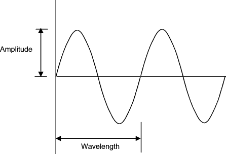
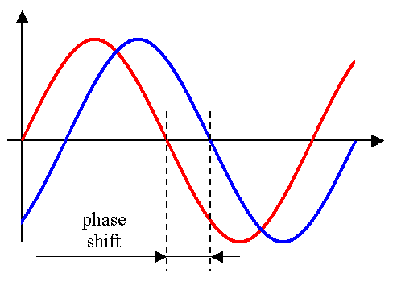
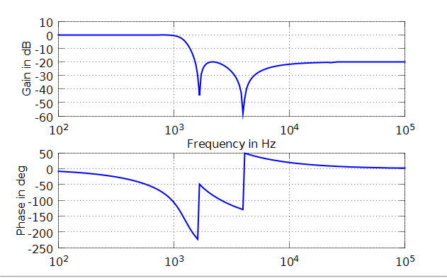

On the bench is a measurement screen with magnitude on top and phase below, and a question that still trips people up: why do we need both?
Some 150 years ago a couple of brilliant guys like Fourier, Hertz and Helmholtz proved that every periodic signal, like music, can be seen as a combination of sine waves:


So when we understand the behaviour of sine waves in our system, we understand our system. Two parameters of sine waves are quite obvious: amplitude for loudness and wavelength for pitch. Taking into account that both are perceived logarithmically, we often use magnitude in dB and frequency in Hz for these two parameters.
So far, everybody with only a wee bit of audio knowledge will know this and work with these two concepts daily.
Phase enters the room
Now for a more tricky concept: phase. Actually, music consisting of only one sine wave at a time can be a bit boring. ;) So normally, when we decompose our music into sine waves, we see a lot of them. At this point we also have to include the way they are related in time, in the analytic description of our systems. Phase expresses this in a manner of how these frequencies are related to each other, rather than absolutely, in time.
Certainly we could express this relation in much more intuitive units like seconds (or ms). (Actually we sometimes do and call this group delay.) But 1 ms of time shift on a wave of 10 kHz has a completely different impact in terms of phase than the same time shift on a 100 Hz wave. So expressing this time difference in phase degrees works better in our case.


Now we all know these pictures and the concept of describing a system in terms of frequency response. More highs, more lows, and for the more literate among us, also mids. ;) By now we should know that this is only half the story. If we do a frequency analysis like the above, also called a Bode plot, we should also include the phase behaviour.

So for correctly describing how system X responds to an input, one should see this kind of picture:


Don't think this will be a nice-sounding loudspeaker system, but hey.
Conventions
Time (delay) and phase are intertwined, and there is really a lot of confusion out there. Let's agree to some conventions:
- For now, let's define phase difference as every time-related difference between the sine components of our signals where one of them is set to zero time, or 0 degrees shift. (Usually the highest frequency.)
- Furthermore: if a group of these sine components is delayed by an equal amount of time, I will not regard this as a phase difference. (For example, in a two-way system in which both sources have a physical distance.)